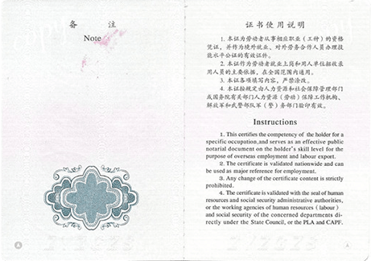

①规定的范围
②可控的时间
③最少的成本
④项目的质量
项目管理师国家职业资格认证是人力资源和社会保障部（原劳动和社会保障部）在全国范围内推
行的四级项目管理专业人员资质认证体系的总称。它共分为四个等级，项目管理员、助理项目管
理师、项目管理师、高级项目管理师，每个等级分别授予不同级别的证书。
 PMP 宣讲会
PMP 宣讲会
作为项目经理你既需要“管理”也要学会“领导”，怎么自由切换角色定位？团队成员分工不同，性格各异，怎么凝聚团队战斗力，如期交付项目？项目进展始终不能达到预期，竭尽全力，却又一筹莫展，接下来该何去何从？
你知道吗？创业企业中，十家的存活率只有一到两家，数以万计的创业者都在创业大潮中变成了分母。他们之中不乏拥有牛逼的商业点子，完美的盈利模型和一群技术大牛，那么他们缺少的是什么呢？
课程揭示了准备成功的商务演示图表所必备的技能与技巧，这些技能和技巧都经过了长期的实验检验，操作简便，行之有效。将教你如何在当今高新技术的条件下，灵活运用这些技巧，制作出效果显著的演示图表。
 俱乐部公告
俱乐部公告
俱乐部活动即将升级。2016年，现代卓越蓄势待发，只等您来！活动随意选！7PDU大送出！！！
澳大利亚维多利亚大学哲学博士（项目管理方向），项目管理全球标准《PMBOK指南》第4版和第5版中文翻译版审校委员会主任。《项目管理评论》杂志首席学术顾问。
澳大利亚维多利亚大学哲学博士（项目管理方向），项目管理全球标准《PMBOK指南》第4版和第5版中文翻译版审校委员会主任。《项目管理评论》杂志首席学术顾问。
澳大利亚维多利亚大学哲学博士（项目管理方向），项目管理全球标准《PMBOK指南》第4版和第5版中文翻译版审校委员会主任。《项目管理评论》杂志首席学术顾问。
澳大利亚维多利亚大学哲学博士（项目管理方向），项目管理全球标准《PMBOK指南》第4版和第5版中文翻译版审校委员会主任。《项目管理评论》杂志首席学术顾问。
澳大利亚维多利亚大学哲学博士（项目管理方向），项目管理全球标准《PMBOK指南》第4版和第5版中文翻译版审校委员会主任。《项目管理评论》杂志首席学术顾问。
项目管理师证书正面
项目管理师证书内页
